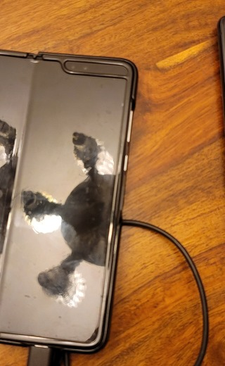
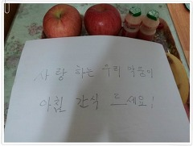

글이 작품이 되는 공간, 브런치
브런치에 담긴 아름다운 작품을 감상해 보세요.그리고 다시 꺼내 보세요.
서랍 속 간직하고 있는 글과 감성을.

남편의 결혼식
by 장혜진 작가

까미의 새 가족
by 구름조각
세상의 유일한 공짜
by 빛담진상중의 진상은 진상 학부모
by 몽접
제주 바다에 푹 빠져버렸다
by 바카리
취업 안되는 취준생 특징
by 철수

이런 것도 먹을 줄 몰라서야
by 김돌
안개 낀 냥독대
by 이용한
오늘은 뭐 먹지?
by 오녜
욕하는 고객보다 말리는 콜센터 직원이 더 밉다.
by 음미숙
김장 전투
by 의성
도로 한가운데서 차가 멈췄다
by LaLa
여주 강천섬 백패킹
by 필란드갑자기 고양이가 5마리
by Blair기분파 부부가 비엔나에 가면 생기는 일
by 조수필
친구의 코로나 양성 연락
by 고집업마
우리집 장희빈
by 김촉봉
ABC 주스의 6가지 진실
by 여에스더
경기도 군포시에 산다는 것
by 설주
그렇게 악착같이 돈 모아서 뭐하게?
by 히야Heeya-

비만 가족
by 국무영

자는 척하는 고양이와 안 자는 척하는 누나
by 김여명 
10년 차 전원주택 생활자
by 장수생- 
돼지국밥에 기대를 많이 하면 벌어지는 일
by 인어수인 
닭 먹으러 갔다가 무만 먹고 오지요
by 아르웬
어머니는 배추를 사러 밭으로 가셨다.
by 연희동 김작가
댁에 불이 난 것 같습니다.
by 고든
10살 아들의 닭똥 같은 눈물
by 유광일잃어버린 양심
by 송영희
⟨ ⟩
B R U N C H K E Y W O R D
키워드로 분류된 다양한 글 모음
지구한바퀴
세계여행
그림·웹툰
시사·이슈
IT
트렌드
사진·촬영
취향저격
영화 리뷰
오늘은
이런 책
뮤직 인사이드
글쓰기
코치
직장인
현실조언
스타트업
경험담
육아
이야기
요리·레시피
건강·운동
멘탈 관리
심리 탐구
디자인
스토리
문화·예술
건축·설계
인문학·철학
쉽게 읽는
역사
우리집
반려동물
멋진
캘리그래피
사랑·이별
감성
에세이
B R U N C H W R I T E R S
브런치 추천 작가
스타트업 그로잉맘 대표 / 아이마음에 상처주지 않는 습관, 그로잉맘 내 아이를 위한 심플육아, 육아말고뭐라도:공저 저자
글을 손 끝에 묻혀 삶을 살아가고 싶습니다. 삶을 손가락 끝에 묻혀 키보드로 써내려가고싶기도 합니다. 불행해도 행복하고싶습니다. 우리 모두 처음 사는 한번뿐인 인생이니까요.
따뜻한 진심을 믿습니다. 관계에 대해 고민하고 글을 쓰고 이야기 나누기를 좋아합니다.
나이도 다르고, 관심사도 다르고, 하는 일도 다르고, 성격도 다르고, 성별도 다르고, 생김새도 다른 네 사람이 모여 같은 주제로 글을 쓰는 프로젝트입니다. (매주 일요일에 봐요!)
필름카메라를 찍습니다. 시를 읽습니다. 글을 끄적입니다. 청소년이 건강한 사회를 꿈꿉니다. 가끔 기고과 강연을 합니다.
"섭섭하지 않은 쿼카" 그림일기 웹툰 작가이자 운동을 좋아하는 일러스트레이터입니다. 따뜻한 그림을 그리고 싶습니다. 작가님의 글에 따뜻함을 더하고 싶으신분들은 제안해주세요.
영화도 보고 드라마도 보고 생각도 가끔 하다가 떠오르는 단상으로 글을 씁니다. 리뷰 신청도 받지만 글을 쓸 거라는 보장은 없습니다.
 김동진
출간작가
김동진
출간작가
취미는 '천천히', 특기는 '꾸준하게'입니다. 영화에 관해 생각하고 쓰고 말하고 있어요. 이메일: mapside2@naver.com
 씨앝
에세이스트
씨앝
에세이스트
일상을 모아 시답잖은 얘기를 합니다. 소소할수록 수다쟁이가 됩니다. 유치하면 더 좋습니다.
JTBC Creative Director & Copywriter. Arthur. 『도로시 사전』(2020). 『광고회사를 떠나며』(2020). 2018 신춘문예 당선.
'사월의 양'입니다. 샌프란시스코에 거주하면서 여행기 보다는 생존기에 가까운 글을 쓰다가, 다시 서울로 돌아와서 일상다반사 슬로우라이프를 끄적끄적 쓰고.. 그리고..
매일 생산 활동 중인 예술·문화 여행자! 책, 영화, 예술, 여행 등의 경험을 좋아하고, 감상을 기록합니다. https://www.facebook.com/dahamida
연구직 회사원으로 일하면서 깨달은 점을 공유합니다. 그리고 일상의 발견을 소중히 여깁니다. 읽고 싶은 글을 쓰는 에세이스트를 꿈 꿉니다.
동물원과 동물 쇼를 반대합니다. "제주에서 2년만 살고 싶었습니다"와 "쓰기와 생활", "잘 지내요 고양이", 스릴러 장편소설 "내 이름을 알려줘"를 썼습니다.
 책쓰는 프로그래머 유동
개발자
책쓰는 프로그래머 유동
개발자
저서: "처음 배우는 플러터", "RxJava 프로그래밍", "안드로이드를 위한 Gradle" 역서: "자바와 JUnit을 활용한 실용주의 단위 테스트" 외 4권
「아이디어기획의 정석」 저자 || LG CNS 사업개발팀 팀장 || 비즈니스 모델링
공감가는 글을 나누고 싶은 하니(하늘+니엘)작가입니다. 하늘이 좋아 승무원으로 일했고 지금은 니엘쌤으로 면접코칭을 하며 관광학을 공부하고 있습니다. 여행과 독서를 사랑합니다.
강아지'보드리'를 좋아하는 최송목의 브런치입니다.

R E C O M M E N D E D A R T I C L E S
브런치의 다양한 글을 만나보세요.
-

임신중 잠결에 들었던 어머님과 남편의 대화
임신 중 가장 큰 고통은 아무래도 입덧일 듯합니다. 저도 예외는 아니었습니다. 임신 5주부터 시작된 입덧이 한동안 계속 이어졌습니다. 살면서 365일 밥맛이 좋았던 제게 입덧은 청천벽력과도 같은 형벌과도 같았습니다. 그렇게 항상 폭풍식욕을 자랑하던 제가 입맛이 없어지다니 정말 저조차도 믿기지 않았습니다. 친정이 지방이다 보니 그런 막내딸이 걱정된 엄마는
by 초원의빛
-
스타벅스에서 톨 사이즈 주문하다 까여본 적 있나요?
맥시멀 리스트 남편이 또 뭔가를 샀다. 사촌 집에서 본 크롬캐스트를 사서 HBO로 요즘 핫하다는 <듄>을 봤다. 아주 먼 미래의 이야기라 주인공이 걸어 다니면 조명이 따라다닌다. 티모시가 나오는데도 불구하고 나는 중간에 박차고 나왔다. 아이맥스로 봐야 재밌다는 걸 집에서 봐서 그런 걸까? 이런 대단한 세계관을 가진 멋진 영화보다 나는 솔직히 올리버 쌤의
by 보리차
-

아홉 살 아이 혼자 병원에 갔다
지난주 가족들과 경주여행을 다녀왔다. 일교차가 심한 날씨라 옷도 여러 개 챙기고 매 시간마다 조끼를 입다가 패딩을 입다가 하며 지냈다. 경주의 가을은 아름다웠고 평소와 달리 걸을 길이 많았다. 그리고 호텔의 공기는 건조했다. 기관지가 약한 아이가 아프기 딱 좋은 조건이었다. 여행이 끝날 즈음 진해진 콧물은 주말 내내 아이를 괴롭혔다. 아이는 일기를 시로
by 쉼표
-

엄마 밥 vs 아빠 밥
밥타령을 그리 하는 편이 아니다. 한 끼 정도는 수시로 건너뛰고, 주전부리로 때우거나 맥주 한 캔으로 대신할 때도 많았다. 요즘처럼 세끼 꼬박 따신 밥을 챙겨 먹었던 적이 언제였었나싶다. 그것도 엄마가 해주는 엄마 밥을. 잠시 한국에 와서 건강 검진도 받고 온 김에 이런저런 일도 보고 있다. 친정에서 지내는 동안 엄마는 부지런히 내 식사를 차리셨다.
by 리리산책
-

자꾸 선을 넘는 녀석
코로나를 넘어 위드 코로나의 시대, 외출과 만남이 허용된 백신 접종 완료자인데도 이상하게 일이 주일 마음이 힘들었다. 한동안 나아졌던 불면증도 돌아왔다. 모두가 잠이 든 시간, 혼자 깨어 어둠을 응시하는 것은 힘든 일이다. 그 시간에는 언제나 즐거운 일이 아니라 슬프고 화나고 힘든 일만 생각나기 때문이다. 다른 생각하려고 해도 어린 시절의 아픈 기억들이 머
by 써니
-

이 집이 55만원이라고요? / 강남에서 원룸 구하기
지난 글에서 소개했던 내가 지내던 90만 원짜리 단기 원룸은 말 그대로 단기, 그것도 한 달만 계약했기 때문에 그다음 달부터 살 곳이 필요했다. 그래서 주말에는 집만 보러 다녔다. 음.. 그런데 집이라고 하긴 민망하고 방을 보러 다녔다.. 집..(방)을 고르는 기준 주거에 쓸 예산은 한정되어 있기 때문에 기준이 중요했다. 가장 중요한 돈은 보증금은 1~
by Pal
-
김두한을 꿈꿨던 착한 강릉주먹
유오성, 장혁 주연의 영화 '강릉'을 보고 나면, 최백호의 대표곡 '낭만에 대하여'가 자연스레 떠오른다. 쌀쌀한 바람이 불어오는 바다를 바라보며 두 번 다시 돌아오지 않을 과거의 낭만을 그리워하는 중년 남성의 향기가 잔뜩 묻어나기 때문이다. 강릉 토박이 형근(오대환)은 외지에서 흘러 들어온 정모(신승환)에게 대뜸 '관동별곡'을 아느냐고 물었다. '관동별곡
by J Hyun
-
도깨비살 드세요, 제발!
도깨비살을 아시나요? 오늘은 삼겹살보다 반값이나 저렴한데 맛은 더 좋은 부위를 소개시켜 드리려고 합니다. 기름도 적어 풍미가 좋은 부위이니 꼭 참고해보세요. 저번 돼지 뒷다리 드세요, 제발! 편에서 많은 사랑과 관심을 보여 주셔서 감사합니다. 오늘은 돼지 중에서도 특수 부위인 도깨비살에 대해서 말씀드리려고 합니다. 워낙 잘 모르시는 부위이다 보니, 아마 /p>
by 지중해
-
요즘 초딩이 노는 법
우리 큰 아이 학교는 등교 수업과 온라인 수업을 병행하고 있다. 온라인 수업 시에는 줌(Zoom)이라는 매체를 사용하는데 1년 넘게 사용하다 보니 우리 아이를 비롯한 다른 아이들도 모두 능숙하게 사용하는 편이다. 줌 사용 초창기에 큰 아이는 나에게 회의실을 개설한 후 호스트를 자기에게 넘겨 달라고 했다. 아이가 선생님이고 내가 학생이었다. 아이는 선생님이
by JOO
-
모닝빵 재발견
막내가 좋아하는 모닝빵을 골랐다. 나란히 2개씩 5줄, 열 개의 빵이 가지런히 비닐봉지에 담겼다. 조금만 힘을 가하면 납작 호떡이 되어 버릴 것 같다. 조금 전 서점에서 산 큰아이의 기말고사 영어 문제집과 과학잡지 사이에 눌려버릴까 조심조심했다. 집 현관문을 열어 식탁 위에 장바구니가 놓일 때까지 지금의 모양이 변하지 않아야 한다. 찌그러진 모닝빵은 다 쓴
by 오진미
-
임신중 잠결에 들었던 어머님과 남편의 대화
임신 중 가장 큰 고통은 아무래도 입덧일 듯합니다. 저도 예외는 아니었습니다. 임신 5주부터 시작된 입덧이 한동안 계속 이어졌습니다. 살면서 365일 밥맛이 좋았던 제게 입덧은 청천벽력과도 같은 형벌과도 같았습니다. 그렇게 항상 폭풍식욕을 자랑하던 제가 입맛이 없어지다니 정말 저조차도 믿기지 않았습니다. 친정이 지방이다 보니 그런 막내딸이 걱정된 엄마는
by 초원의빛
-
스타벅스에서 톨 사이즈 주문하다 까여본 적 있나요?
맥시멀 리스트 남편이 또 뭔가를 샀다. 사촌 집에서 본 크롬캐스트를 사서 HBO로 요즘 핫하다는 <듄>을 봤다. 아주 먼 미래의 이야기라 주인공이 걸어 다니면 조명이 따라다닌다. 티모시가 나오는데도 불구하고 나는 중간에 박차고 나왔다. 아이맥스로 봐야 재밌다는 걸 집에서 봐서 그런 걸까? 이런 대단한 세계관을 가진 멋진 영화보다 나는 솔직히 올리버 쌤의
by 보리차
-
아홉 살 아이 혼자 병원에 갔다
지난주 가족들과 경주여행을 다녀왔다. 일교차가 심한 날씨라 옷도 여러 개 챙기고 매 시간마다 조끼를 입다가 패딩을 입다가 하며 지냈다. 경주의 가을은 아름다웠고 평소와 달리 걸을 길이 많았다. 그리고 호텔의 공기는 건조했다. 기관지가 약한 아이가 아프기 딱 좋은 조건이었다. 여행이 끝날 즈음 진해진 콧물은 주말 내내 아이를 괴롭혔다. 아이는 일기를 시로
by 쉼표
-
엄마 밥 vs 아빠 밥
밥타령을 그리 하는 편이 아니다. 한 끼 정도는 수시로 건너뛰고, 주전부리로 때우거나 맥주 한 캔으로 대신할 때도 많았다. 요즘처럼 세끼 꼬박 따신 밥을 챙겨 먹었던 적이 언제였었나싶다. 그것도 엄마가 해주는 엄마 밥을. 잠시 한국에 와서 건강 검진도 받고 온 김에 이런저런 일도 보고 있다. 친정에서 지내는 동안 엄마는 부지런히 내 식사를 차리셨다.
by 리리산책
-
자꾸 선을 넘는 녀석
코로나를 넘어 위드 코로나의 시대, 외출과 만남이 허용된 백신 접종 완료자인데도 이상하게 일이 주일 마음이 힘들었다. 한동안 나아졌던 불면증도 돌아왔다. 모두가 잠이 든 시간, 혼자 깨어 어둠을 응시하는 것은 힘든 일이다. 그 시간에는 언제나 즐거운 일이 아니라 슬프고 화나고 힘든 일만 생각나기 때문이다. 다른 생각하려고 해도 어린 시절의 아픈 기억들이 머
by 써니
-
이 집이 55만원이라고요? / 강남에서 원룸 구하기
지난 글에서 소개했던 내가 지내던 90만 원짜리 단기 원룸은 말 그대로 단기, 그것도 한 달만 계약했기 때문에 그다음 달부터 살 곳이 필요했다. 그래서 주말에는 집만 보러 다녔다. 음.. 그런데 집이라고 하긴 민망하고 방을 보러 다녔다.. 집..(방)을 고르는 기준 주거에 쓸 예산은 한정되어 있기 때문에 기준이 중요했다. 가장 중요한 돈은 보증금은 1~
by Pal
-
김두한을 꿈꿨던 착한 강릉주먹
유오성, 장혁 주연의 영화 '강릉'을 보고 나면, 최백호의 대표곡 '낭만에 대하여'가 자연스레 떠오른다. 쌀쌀한 바람이 불어오는 바다를 바라보며 두 번 다시 돌아오지 않을 과거의 낭만을 그리워하는 중년 남성의 향기가 잔뜩 묻어나기 때문이다. 강릉 토박이 형근(오대환)은 외지에서 흘러 들어온 정모(신승환)에게 대뜸 '관동별곡'을 아느냐고 물었다. '관동별곡
by J Hyun
-
도깨비살 드세요, 제발!
도깨비살을 아시나요? 오늘은 삼겹살보다 반값이나 저렴한데 맛은 더 좋은 부위를 소개시켜 드리려고 합니다. 기름도 적어 풍미가 좋은 부위이니 꼭 참고해보세요. 저번 돼지 뒷다리 드세요, 제발! 편에서 많은 사랑과 관심을 보여 주셔서 감사합니다. 오늘은 돼지 중에서도 특수 부위인 도깨비살에 대해서 말씀드리려고 합니다. 워낙 잘 모르시는 부위이다 보니, 아마 /p>
by 지중해
-
요즘 초딩이 노는 법
우리 큰 아이 학교는 등교 수업과 온라인 수업을 병행하고 있다. 온라인 수업 시에는 줌(Zoom)이라는 매체를 사용하는데 1년 넘게 사용하다 보니 우리 아이를 비롯한 다른 아이들도 모두 능숙하게 사용하는 편이다. 줌 사용 초창기에 큰 아이는 나에게 회의실을 개설한 후 호스트를 자기에게 넘겨 달라고 했다. 아이가 선생님이고 내가 학생이었다. 아이는 선생님이
by JOO
-
모닝빵 재발견
막내가 좋아하는 모닝빵을 골랐다. 나란히 2개씩 5줄, 열 개의 빵이 가지런히 비닐봉지에 담겼다. 조금만 힘을 가하면 납작 호떡이 되어 버릴 것 같다. 조금 전 서점에서 산 큰아이의 기말고사 영어 문제집과 과학잡지 사이에 눌려버릴까 조심조심했다. 집 현관문을 열어 식탁 위에 장바구니가 놓일 때까지 지금의 모양이 변하지 않아야 한다. 찌그러진 모닝빵은 다 쓴
by 오진미
-
임신중 잠결에 들었던 어머님과 남편의 대화
임신 중 가장 큰 고통은 아무래도 입덧일 듯합니다. 저도 예외는 아니었습니다. 임신 5주부터 시작된 입덧이 한동안 계속 이어졌습니다. 살면서 365일 밥맛이 좋았던 제게 입덧은 청천벽력과도 같은 형벌과도 같았습니다. 그렇게 항상 폭풍식욕을 자랑하던 제가 입맛이 없어지다니 정말 저조차도 믿기지 않았습니다. 친정이 지방이다 보니 그런 막내딸이 걱정된 엄마는
by 초원의빛
-
스타벅스에서 톨 사이즈 주문하다 까여본 적 있나요?
맥시멀 리스트 남편이 또 뭔가를 샀다. 사촌 집에서 본 크롬캐스트를 사서 HBO로 요즘 핫하다는 <듄>을 봤다. 아주 먼 미래의 이야기라 주인공이 걸어 다니면 조명이 따라다닌다. 티모시가 나오는데도 불구하고 나는 중간에 박차고 나왔다. 아이맥스로 봐야 재밌다는 걸 집에서 봐서 그런 걸까? 이런 대단한 세계관을 가진 멋진 영화보다 나는 솔직히 올리버 쌤의
by 보리차
-
아홉 살 아이 혼자 병원에 갔다
지난주 가족들과 경주여행을 다녀왔다. 일교차가 심한 날씨라 옷도 여러 개 챙기고 매 시간마다 조끼를 입다가 패딩을 입다가 하며 지냈다. 경주의 가을은 아름다웠고 평소와 달리 걸을 길이 많았다. 그리고 호텔의 공기는 건조했다. 기관지가 약한 아이가 아프기 딱 좋은 조건이었다. 여행이 끝날 즈음 진해진 콧물은 주말 내내 아이를 괴롭혔다. 아이는 일기를 시로
by 쉼표
-
엄마 밥 vs 아빠 밥
밥타령을 그리 하는 편이 아니다. 한 끼 정도는 수시로 건너뛰고, 주전부리로 때우거나 맥주 한 캔으로 대신할 때도 많았다. 요즘처럼 세끼 꼬박 따신 밥을 챙겨 먹었던 적이 언제였었나싶다. 그것도 엄마가 해주는 엄마 밥을. 잠시 한국에 와서 건강 검진도 받고 온 김에 이런저런 일도 보고 있다. 친정에서 지내는 동안 엄마는 부지런히 내 식사를 차리셨다.
by 리리산책
-
자꾸 선을 넘는 녀석
코로나를 넘어 위드 코로나의 시대, 외출과 만남이 허용된 백신 접종 완료자인데도 이상하게 일이 주일 마음이 힘들었다. 한동안 나아졌던 불면증도 돌아왔다. 모두가 잠이 든 시간, 혼자 깨어 어둠을 응시하는 것은 힘든 일이다. 그 시간에는 언제나 즐거운 일이 아니라 슬프고 화나고 힘든 일만 생각나기 때문이다. 다른 생각하려고 해도 어린 시절의 아픈 기억들이 머
by 써니
-
이 집이 55만원이라고요? / 강남에서 원룸 구하기
지난 글에서 소개했던 내가 지내던 90만 원짜리 단기 원룸은 말 그대로 단기, 그것도 한 달만 계약했기 때문에 그다음 달부터 살 곳이 필요했다. 그래서 주말에는 집만 보러 다녔다. 음.. 그런데 집이라고 하긴 민망하고 방을 보러 다녔다.. 집..(방)을 고르는 기준 주거에 쓸 예산은 한정되어 있기 때문에 기준이 중요했다. 가장 중요한 돈은 보증금은 1~
by Pal
-
김두한을 꿈꿨던 착한 강릉주먹
유오성, 장혁 주연의 영화 '강릉'을 보고 나면, 최백호의 대표곡 '낭만에 대하여'가 자연스레 떠오른다. 쌀쌀한 바람이 불어오는 바다를 바라보며 두 번 다시 돌아오지 않을 과거의 낭만을 그리워하는 중년 남성의 향기가 잔뜩 묻어나기 때문이다. 강릉 토박이 형근(오대환)은 외지에서 흘러 들어온 정모(신승환)에게 대뜸 '관동별곡'을 아느냐고 물었다. '관동별곡
by J Hyun
-
도깨비살 드세요, 제발!
도깨비살을 아시나요? 오늘은 삼겹살보다 반값이나 저렴한데 맛은 더 좋은 부위를 소개시켜 드리려고 합니다. 기름도 적어 풍미가 좋은 부위이니 꼭 참고해보세요. 저번 돼지 뒷다리 드세요, 제발! 편에서 많은 사랑과 관심을 보여 주셔서 감사합니다. 오늘은 돼지 중에서도 특수 부위인 도깨비살에 대해서 말씀드리려고 합니다. 워낙 잘 모르시는 부위이다 보니, 아마 /p>
by 지중해
-
요즘 초딩이 노는 법
우리 큰 아이 학교는 등교 수업과 온라인 수업을 병행하고 있다. 온라인 수업 시에는 줌(Zoom)이라는 매체를 사용하는데 1년 넘게 사용하다 보니 우리 아이를 비롯한 다른 아이들도 모두 능숙하게 사용하는 편이다. 줌 사용 초창기에 큰 아이는 나에게 회의실을 개설한 후 호스트를 자기에게 넘겨 달라고 했다. 아이가 선생님이고 내가 학생이었다. 아이는 선생님이
by JOO
-
모닝빵 재발견
막내가 좋아하는 모닝빵을 골랐다. 나란히 2개씩 5줄, 열 개의 빵이 가지런히 비닐봉지에 담겼다. 조금만 힘을 가하면 납작 호떡이 되어 버릴 것 같다. 조금 전 서점에서 산 큰아이의 기말고사 영어 문제집과 과학잡지 사이에 눌려버릴까 조심조심했다. 집 현관문을 열어 식탁 위에 장바구니가 놓일 때까지 지금의 모양이 변하지 않아야 한다. 찌그러진 모닝빵은 다 쓴
by 오진미
-
임신중 잠결에 들었던 어머님과 남편의 대화
임신 중 가장 큰 고통은 아무래도 입덧일 듯합니다. 저도 예외는 아니었습니다. 임신 5주부터 시작된 입덧이 한동안 계속 이어졌습니다. 살면서 365일 밥맛이 좋았던 제게 입덧은 청천벽력과도 같은 형벌과도 같았습니다. 그렇게 항상 폭풍식욕을 자랑하던 제가 입맛이 없어지다니 정말 저조차도 믿기지 않았습니다. 친정이 지방이다 보니 그런 막내딸이 걱정된 엄마는
by 초원의빛
-
스타벅스에서 톨 사이즈 주문하다 까여본 적 있나요?
맥시멀 리스트 남편이 또 뭔가를 샀다. 사촌 집에서 본 크롬캐스트를 사서 HBO로 요즘 핫하다는 <듄>을 봤다. 아주 먼 미래의 이야기라 주인공이 걸어 다니면 조명이 따라다닌다. 티모시가 나오는데도 불구하고 나는 중간에 박차고 나왔다. 아이맥스로 봐야 재밌다는 걸 집에서 봐서 그런 걸까? 이런 대단한 세계관을 가진 멋진 영화보다 나는 솔직히 올리버 쌤의
by 보리차
-
아홉 살 아이 혼자 병원에 갔다
지난주 가족들과 경주여행을 다녀왔다. 일교차가 심한 날씨라 옷도 여러 개 챙기고 매 시간마다 조끼를 입다가 패딩을 입다가 하며 지냈다. 경주의 가을은 아름다웠고 평소와 달리 걸을 길이 많았다. 그리고 호텔의 공기는 건조했다. 기관지가 약한 아이가 아프기 딱 좋은 조건이었다. 여행이 끝날 즈음 진해진 콧물은 주말 내내 아이를 괴롭혔다. 아이는 일기를 시로
by 쉼표
-
엄마 밥 vs 아빠 밥
밥타령을 그리 하는 편이 아니다. 한 끼 정도는 수시로 건너뛰고, 주전부리로 때우거나 맥주 한 캔으로 대신할 때도 많았다. 요즘처럼 세끼 꼬박 따신 밥을 챙겨 먹었던 적이 언제였었나싶다. 그것도 엄마가 해주는 엄마 밥을. 잠시 한국에 와서 건강 검진도 받고 온 김에 이런저런 일도 보고 있다. 친정에서 지내는 동안 엄마는 부지런히 내 식사를 차리셨다.
by 리리산책
-
자꾸 선을 넘는 녀석
코로나를 넘어 위드 코로나의 시대, 외출과 만남이 허용된 백신 접종 완료자인데도 이상하게 일이 주일 마음이 힘들었다. 한동안 나아졌던 불면증도 돌아왔다. 모두가 잠이 든 시간, 혼자 깨어 어둠을 응시하는 것은 힘든 일이다. 그 시간에는 언제나 즐거운 일이 아니라 슬프고 화나고 힘든 일만 생각나기 때문이다. 다른 생각하려고 해도 어린 시절의 아픈 기억들이 머
by 써니